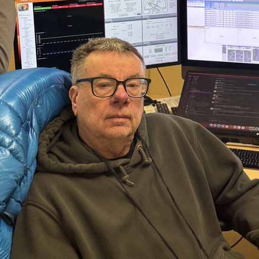

I work on the Dark Energy Spectroscopic Instrument, which is measuring the expansion history of the universe. My interests are in cosmological parameters, instrumentation, and targeting for Run 2.
Electromagnetic · weak · strong — and now gravity on cosmic scales
e⁺e⁻ → b b
CLEO @ Cornellbottom-quark physics
(1980)
q q → W, Z
UA1 @ CERN ppW and Z boson discovery
(1983)
g g → H
CMS @ CERN LHCHiggs boson discovery
(2012)
first hadron jets
(1977)
large-scale structure
DESI @ Kitt Peakgravity on cosmic scales
(now)
spin-2 graviton — theory only;
no quantum theory of gravity
Same toolkit — symmetry & quantum fields — carried from particle colliders to the growth of cosmic structure with DESI.
Full publication record on INSPIRE →
Personal site (CERN)·BU faculty profile·BU DESI·ORCID·INSPIRE·Research·Talks·Honors
Department of Physics, Boston University, 590 Commonwealth Avenue, Boston, MA 02215 · rohlf@bu.edu